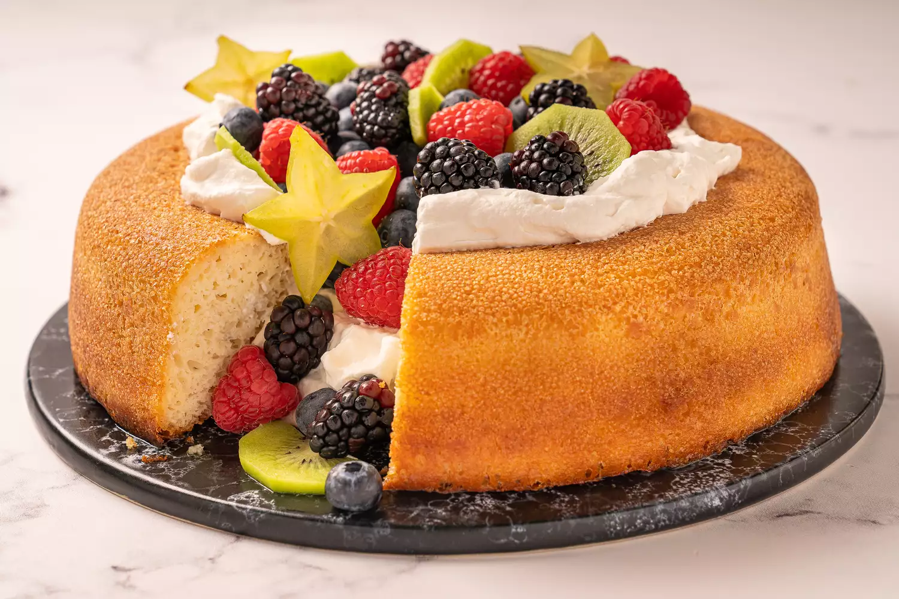

Savarin
The recipe is referencing from
this website
.

Description
Savarin is a ring-shaped cake that has been soaked with flavored syrup and then garnished with cream and fruit. The batter for a savarin is related to the dough used in brioche but with less flour, making it looser and stickier.
What makes a savarin different than your typical Bundt cake is that savarin is a yeast dough. The result is a light and spongy cake with a light, bready aroma that is perfect for soaking up a flavorful syrup. You'll need to plan ahead since the dough needs to rise almost two hours total. Use whatever fruit is in season such as berries, sliced kiwi, starfruit, peeled citrus, peaches, or plums.
Ingredients
For the Dough:
- 10 tablespoons warm water, divided
- 1 (0.25-ounce) packet active dry yeast (2 1/12 teaspoons)
- 2 tablespoons sugar
- 2 teaspoon salt
- 1 2/3 cups all-purpose flour
- 2 large eggs
- 1 large egg yolk
- 4 ounces (1/2 cup) unsalted butter, melted and cooled
- Cooking spray
For the Syrup:
- 1 cup water
- 1/2 cup sugar
- 1/2 cup kirschwasser, or golden rum
For the Whipped Cream Filling:
- 2 cups heavy whipping cream
- 2 tablespoons sugar
- 1 teaspoon pure vanilla extract
- Assorted berries, sliced fresh fruit, for garnish
Steps
Cake
- Gather the ingredients.
- Place 2 tablespoons of the warm water in a small bowl. Sprinkle with the yeast and let stand 5 minutes to dissolve and become foamy.
- Combine the sugar, salt, and 2 more tablespoons of the warm water in the bowl of a stand mixer fitted with a dough hook. Stir to dissolve.
- Add the flour and stir to combine.
- Add the whole eggs and egg yolk, 1 at a time, mixing at medium speed each time. Continue to stir until the dough is smooth and firm, about 5 minutes.
- Stir in the yeast mixture.
- Slowly add the remaining 6 tablespoons of warm water, 1 tablespoon at a time, with the mixer running on slow speed. Mix until the dough is silky and elastic and pulls away from the side of the bowl. This will take about 15 minutes.
- With the mixer stilling running on low speed, add the melted butter in a slow, steady stream. The dough will be silky, runny, and elastic after about 3 minutes.
- Cover the bowl with a towel and stand in a warm, draft-free place until doubled in size, about 1 hour.
- Prepare an 11-inch savarin mold with cooking spray and fill with the dough. Place in a warm, draft-free place and allow to rise by about one-third, about 45 minutes. Meanwhile, preheat the oven to 400 F.
- Bake until golden brown, about 20 minutes.
- Remove the mold from the oven and turn the heat down to 375 F. Immediately invert the cake onto a baking sheet and return it to the oven for 15 minutes to dry out.
- Cool completely on a wire rack.
Syrup and Whipped Cream
- To make the syrup, combine the water, 1/2 cup sugar, and kirschwasser in a small saucepan over low heat, stirring constantly until the sugar dissolves. Remove from heat.
- Return the cooled savarin to the baking pan. Set the pan on a rimmed baking sheet. Slowly drizzle some of the syrup over the cake, allowing it to absorb. Continue to drizzle the liquid over the cake until it is all absorbed. Allow the cake to rest for 30 minutes in the pan.
- Meanwhile, in a large mixing bowl, whip the heavy cream, 2 tablespoons sugar, and vanilla extract until stiff peaks form.
- Turn the soaked savarin onto a serving platter. Fill the center of the cake with the whipped cream.
- Garnish with your choice of fresh berries or sliced fresh fruit.
Back to Homepage